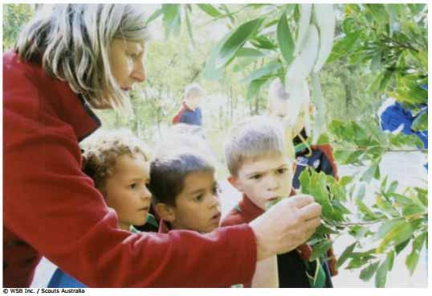
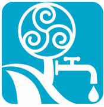

Hojas Pegajosas


Finalidad 1
Los scouts trabajan a favor de un mundo donde las personas y tienen agua y aire limpios.
Objetivos educativos: Explorar las fuentes de agua limpia y aire limpio en el ambiente local. Comprender las maneras en que el agua y el aire se limpian naturalmente.Edad: Menores de 11 años
Resumen: Una actividad divertida y al aire libre para investigar el aire y hacer visible la contaminación del aire.
Objetivo: Aprender sobre la contaminación del aire e investigar la calidad del aire local.
Materiales y equipo: Cinta adhesiva (tape) transparente, mapas, papel blanco.
Preparación: Encontrar un lugar apropiado para llevar a cabo la actividad.
Duración: Una hora
Lugar: Un lugar al aire libre con árboles y arbustos. La actividad puede desarrollarse en más de un sitio. Si ese es el caso, escoger áreas que difieran en su proximidad a carreteras, fábricas u otras fuentes de contaminación del aire. Las áreas deberán tener árboles o arbustos con hojas, pero las hojas no deben estar muy cerca del suelo. Un punto importante de anotar es que las hojas con superficies lisas dan mejor resultado que las hojas con superficies vellosas o peludas.
Antecedentes: Un contaminante del aire es cualquier sustancia o químico indeseado que contamina el aire que respiramos, resultando en un descenso de la calidad del aire. Los contaminantes del aire incluyen humo, monóxido de carbono, óxidos de nitrógeno, dióxido de sulfuro, partículas y ozono.
Los contaminantes del aire tienen fuentes tanto naturales como humanas. Fuentes naturales incluyen volcanes, incendios naturales, polvo, la digestión de pasto por el ganado y la decadencia radioactiva natural.
Sin embargo, aunque algunos contaminantes vienen de fuentes naturales, la mayoría de la contaminación es resultado de la actividad humana. Las mayores causas son la operación de plantas eléctricas que queman combustible fósil y automóviles que operan con hidrocarburos.
La mayoría de los contaminantes del aire pueden ser perjudiciales para la salud humana. La contaminación del aire a menudo se asocia con problemas respiratorios. Puede enfermar a las personas o causar complicaciones médicas a largo plazo, particularmente en aquellos más sensibles a la contaminación, tal como niños y personas mayores.
Hay tres maneras en las que la contaminación del aire puede afectar a los animales. Estos pueden respirar gases o pequeñas partículas, ingerir partículas con la comida o en el agua, o absorber gases por medio de la piel. Los invertebrados de cuerpos blandos, como las lombrices de tierra, o animales con piel suave y húmeda como las ranas, son especialmente afectadas al absorber la contaminación.
La contaminación del aire y el polvo a menudo dejan residuos sobre las hojas. La actividad “Hojas pegajosas” recolecta estos residuos. Esto hace “visible” la contaminación del aire y más fácil de entender. La contaminación del aire en diferentes áreas se puede comparar y relacionar con la fuente de dicha contaminación.
Guía paso a paso de la actividad
1. Dele a los Scouts cinco minutos para que exploren su entorno. Pueden explorar en pequeños grupos o individualmente. Pídales que descubran todas las cosas distintas que conforman el ambiente a su alrededor.2. Reúna al grupo y discutan los descubrimientos. Debieron notar seres vivos tales como árboles, plantas y animales, al igual que objetos inanimados como el suelo, rocas y agua. ¿Pregunte a los Scout cómo están conectadas todos estos elementos? ¿Quién se come a quién? ¿Dónde viven los animales? ¿Qué necesitan los árboles y plantas para sobrevivir? Deberían descubrir que todo el ambiente esta conectado entre sí. Pregúnteles si hay algo más que es vital para este ambiente que no podemos ver. La respuesta es el aire.
3. Pídale a los Scouts que se sienten y durante uno o dos minutos respiren el aire y piensen en él. Deberían respirar profundamente y tratar de llenar sus pulmones. Al final del tiempo asignado pídales que describan el aire a su alrededor. ¿Tiene sabor a algo? ¿Tiene olor a algo? ¿Pueden verlo? ¿Qué hay en el aire?
4. Introduzca la actividad de las hojas pegajosas. Nuestro aire contiene 21% de oxigeno, 72% de nitrógeno, aproximadamente 7% de dióxido de carbono y aproximadamente 1% de otros gases, incluyendo contaminantes. La mayoría de los gases y partículas que componen nuestro aire, incluyendo el oxigeno, nitrógeno y dióxido de carbono, no tienen color, ni olor, ni sabor. Sin embargo, algunos de los contaminantes son partículas lo suficientemente grandes como para ser perceptibles a simple vista. La actividad hojas pegajosas permite colectar estas partículas.
5. Pregúntele a los scouts de dónde creen que pueden provenir los contaminantes (algunas fuentes son los vehículos, plantas eléctricas que queman combustible fósil, volcanes, incendios, polvo). Pregúntele a los Scouts acerca de su ubicación actual. ¿Que fuentes de contaminación del aire están cerca?
6. Divida a los Scouts en pequeños grupos y entréguele a cada grupo papel blanco, tijeras y cinta adhesiva. Dependiendo del tamaño u otras características de su área natural y del tamaño del grupo, puede asignarle a cada grupo su propia área o tipo de vegetación o puede permitirles que decidan por sí mismos dónde tomarán la muestra.
7. Los Scouts deben cortar una pieza de cinta adhesiva y presionarla firmemente, con el lado pegajoso hacia abajo, sobre una hoja. Luego deben retirar cuidadosamente la cinta adhesiva y pegarla en una pieza de papel blanco. Cada grupo debería hacer esto por lo menos diez veces para obtener una muestra representativa y anotar o dibujar la ubicación donde tomaron la muestra.
Evaluación
1. Reúna a los Scouts y comparen los resultados. Si tienen acceso a una lupa o a un microscopio, miren de cerca las muestras.
Clasifiquen las diferentes muestras de acuerdo a su grado de suciedad. ¿Dónde tomaron las muestras más sucias? ¿Dónde tomaron las muestras más limpias? ¿Existe algún patrón, si es así, por qué? ¿De donde proviene la contaminación?
2. Si tomaron muestras en más de un área, transfieran los resultados a un mapa y discutanlos. ¿Existe alguna razón por la cual ciertas áreas muestren más contaminación que otras? ¿De dónde proviene la contaminación?
3. Piensa en el daño que la contaminación en el aire puede estar causando. ¿Cómo podría afectar a las plantas? ¿Cómo podría afectar la salud humana? ¿Cómo podría afectar a los animales? Tengan en mente que esta es solamente la contaminación visible. Mucha de la contaminación no es
Actividades avanzadas
1. Hay otras maneras en las que la contaminación puede ser “visible”. Investigue edificios construidos con piedra en su localidad. Estos pueden mostrar evidencia de contaminación del aire, particularmente de automóviles o carreteras adyacentes. Preste atención a piedras naturales que parezcan “sucias”. Los cementerios son también buenos lugares para ver los efectos de la contaminación del aire en la piedra. Averigüe cómo los
científicos miden la contaminación del aire.
2. Piense cómo nuestras acciones afectan la contaminación del aire. ¿Cómo contribuimos a dicha contaminación y qué podemos hacer para reducir la contaminación del aire?
3. Elabore un póster que muestre las diferentes actividades en su localidad que contribuyen a la contaminación del aire.perceptible a simple vista.
© World Scout Bureau
Rue du Pré-Jérôme 5
PO Box 91
1211 Geneva 4 Plainpalais
Switzerland
Tel.: (+ 41 22) 705 10 10
Fax: (+ 41 22) 705 10 20
worldbureau@scout.org
scout.org
Reproduction is authorized to National Scout
Organizations and Associations which are
members of the World Organization of the Scout
Rue du Pré-Jérôme 5
PO Box 91
1211 Geneva 4 Plainpalais
Switzerland
Tel.: (+ 41 22) 705 10 10
Fax: (+ 41 22) 705 10 20
worldbureau@scout.org
scout.org
Reproduction is authorized to National Scout
Organizations and Associations which are
members of the World Organization of the Scout